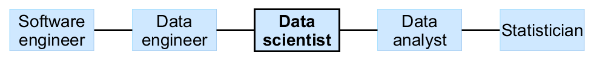
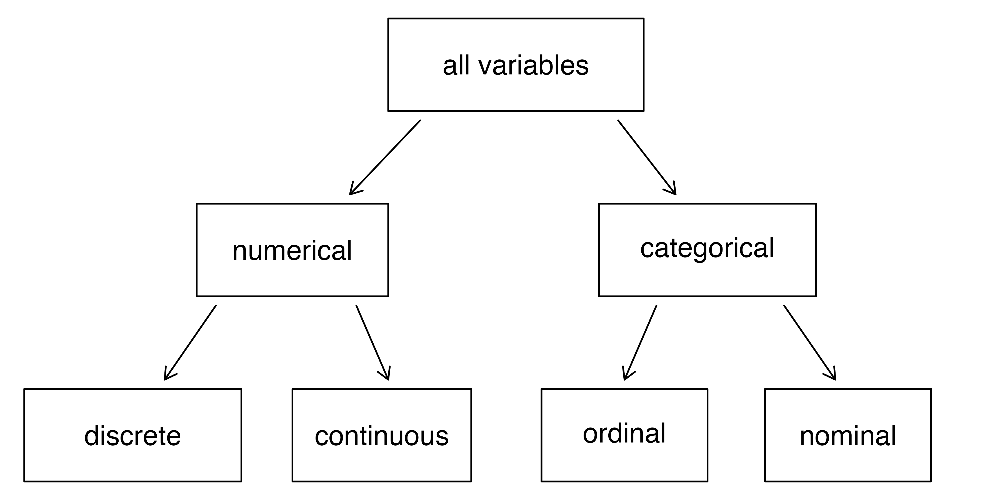
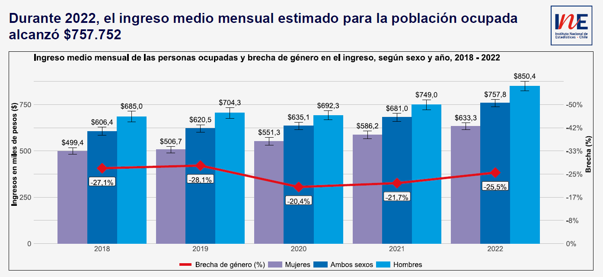
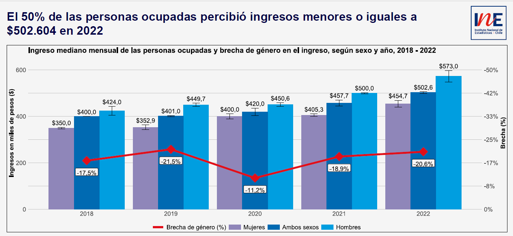
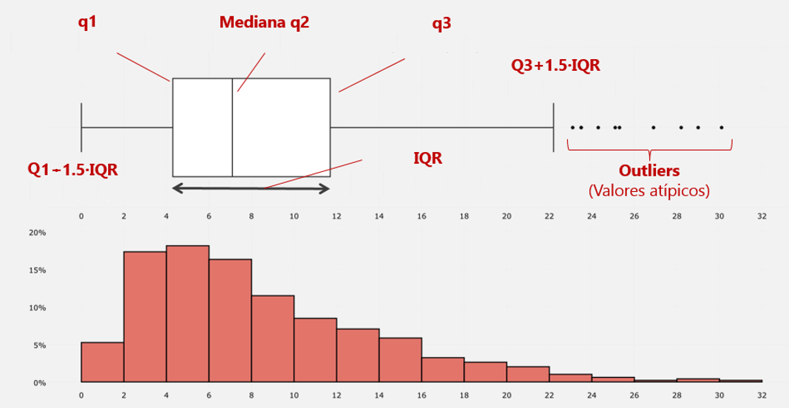
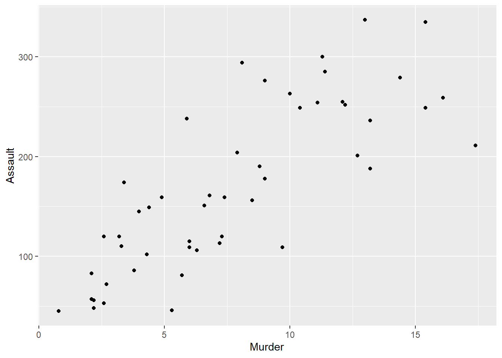
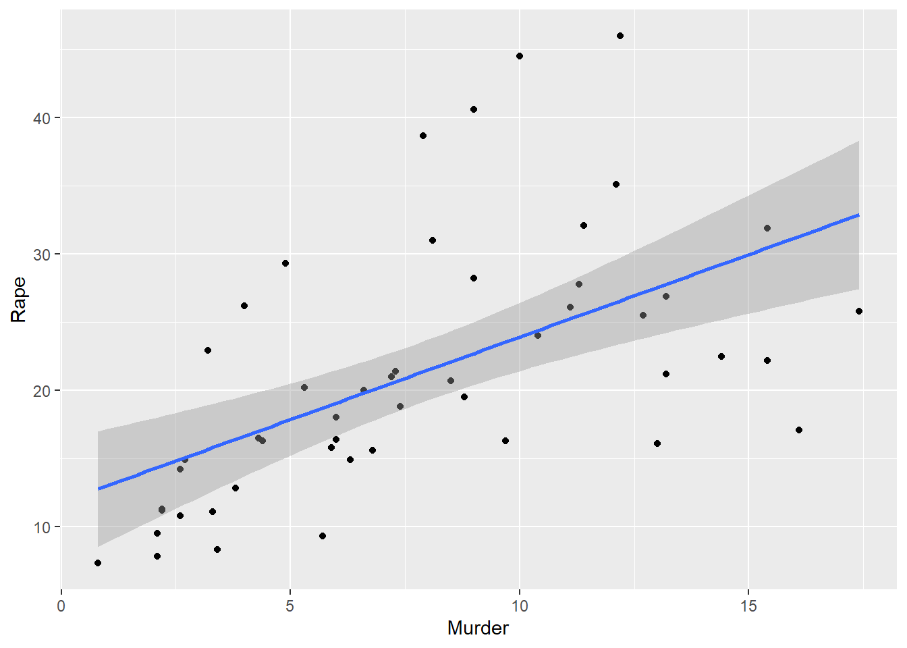

| País | Continente | Esperanza de Vida | Población | PIB per Cápita |
|---|---|---|---|---|
| Argentina | Americas | 75,32 | 40.301.927 | 12.779,38 |
| Bolivia | Americas | 65,55 | 9.119.152 | 3.822,14 |
| Brazil | Americas | 72,39 | 190.010.647 | 9.065,80 |
| Canada | Americas | 80,65 | 33.390.141 | 36.319,24 |
| Chile | Americas | 78,55 | 16.284.741 | 13.171,64 |
1 Estadística Descriptiva
Este capítulo tiene como objetivo general enseñar las nociones básicas de la estadística a través del uso del software R.
Como objetivos específicos se busca:
- Conocer la utilidad de la estadística y el origen de la ciencia de datos.
- Aplicar mediante
Restadísticas descriptivas para diversos conjuntos de datos. - Repasar (o aprender) las nociones básicas de la probabilidad.
1.1 Estadística
En un sentido amplio, la estadística se define como una disciplina que, basada en determinadas metodologías y conceptos, consiste en producir, analizar, procesar, interpretar y presentar un conjunto de datos.
Dos ideas fundamentales en el campo de la estadística son la incertidumbre y la variación. En este sentido, la estadística y la probabilidad se basan en métodos tanto para describir y modelar esta variabilidad, así como para tomar decisiones en presencia de ella.
Las principales dos ramas de la estadística son la estadística descriptiva y la estadística inferencial:
- Estadística Descriptiva: Consiste en métodos para organizar y resumir datos.
- Estadística Inferencial: Consiste en obtener conclusiones a partir de una muestra de datos.
1.1.1 Orígines del Data Science
Originalmente, la estadística clásica se centraba casi exclusivamente en la inferencia, un conjunto de procedimientos para sacar conclusiones sobre poblaciones grandes basadas en muestras pequeñas.
No obstante, en el año 1962, John Turkey ya comentaba sobre una reformulación de la estadística en su paper The Future of Data Analysis (tukey1962?) abogando por una nueva disciplina llamada data analysis, en donde la inferencia era solo un componente de ella:
[…My central interest is in data analysis, which I take to include, among other things: procedures for analyzing data, techniques for interpreting the results of such procedures, ways of planning the gathering of data to make its analysis easier, more precise or more accurate, and all the machinery and results of (mathematical) statistics which apply to analyzing data…]
En 1977 con su libro Exploratory Data Analysis (tukey1977?) propone utilizar gráficos sencillos (tales como boxplots y scatterplots) en conjunto con estadísticas de resumen (tales como la media, la mediana, cuantiles, etc.) para tener una primera impresión general del conjunto de datos que se analiza.
1.1.2 ¿Data Science o Estadística?
Segun AWS, la estadística es un campo con bases matemáticas que busca recopilar e interpretar datos cuantitativos. En cambio, la ciencia de datos es un campo multidisciplinario que utiliza métodos, procesos y sistemas científicos para extraer conocimientos a partir de los datos de maneras diversas. Los científicos de datos utilizan métodos de muchas disciplinas, incluida la estadística. Sin embargo, los campos difieren en sus procesos y los problemas que estudian.
Yanir Seroussi (seroussi2014?), en su post, define como Data Scientist a aquella persona que es mejor en estadística que cualquier ingeniero de software y mejor en ingeniería de software que cualquier estadístico. Argumenta que, para él, la novedad principal de la ciencia de datos proviene de la aplicación de softwares para modelar cualquier tipo de datos de una manera que se generalice en todos los dominios.

- El campo de la estadística guarda relación con la recopilación, análisis y uso de datos para tomar decisiones y resolver problemas.
- Las 2 ramas principales de la estadística son la descriptiva y la inferencial.
- El análisis de datos implica más procesos que solamente el uso de la estadística.
- La estadística es sola una parte de lo que podemos entender por ciencia de datos en su concepción más general.
1.2 Tipos de Datos
- Numéricos: Datos que son expresados en una escala numérica. Pueden clasificarse en:
- Continuos: Datos que pueden tomar cualquier valor en un intervalo.
- Discretos: Datos que sólo pueden tomar valores enteros, tales como los recuentos.
- Categóricos: Datos que solo pueden tomar valores específicos sobre un set de posibles categorías. Pueden clasificarse en:
- Nominales: Categorías que no se pueden ordenar ni clasificar.
- Binarios: Un caso especial de datos categóricos con solo dos categorías de valores, por ejemplo: 0/1, verdadero/falso.
- Ordinales: Datos categóricos que tienen un orden explícito.
- Nominales: Categorías que no se pueden ordenar ni clasificar.
Los tipos de datos se pueden resumir según el siguiente esquema:

1.2.1 Datos Rectangulares
- Dataframe: Los datos rectangulares (aquellos que comúnmente asociamos a una hoja de cálculo) son la estructura de datos básica para los modelos estadísticos.
- Feature: Corresponde a las columnas o variables de la tabla de datos (sinónimos: attribute, input, predictor, variable).
- Outcome: Muchos proyectos de ciencia de datos tienen por objetivo predecir un resultado de interés o outcome. Las features a veces se utilizan para predecir el resultado de un experimento o estudio. (sinónimos: dependent variable, response, target, output).
- Records: Una observación o record corresponde comúnmente a una fila dentro de una tabla. (sinónimos: case, instance,observation).

Veamos un ejemplo de datos ordenados en formato rectangular y tidy (bryan2023?)
Ideas Principales
- Los tipos de datos incluyen numéricos (continuos, discretos) y categóricos (nominales, binarios, ordinales).
- La tipificación de datos dentro de un software es importante para indicarle cómo debe procesar los datos.
- La estructura de datos básica en la ciencia de datos es una matriz rectangular (dataframe) en la que las filas son registros (records) y las columnas son variables (features).
1.3 Medidas de tendencia central
Un paso básico para explorar datos cuantitativos es obtener un valor típico para cada variable: una estimación de dónde se encuentran la mayoría de los datos (es decir, su tendencia central). Las más típicas son:
- Media
- Media Ponderada
- Media Recortada
- Mediana
- Percentiles
1.3.1 Media (Mean)
La media es la suma de todos los valores dividido por la cantidad de valores considerados (n = total de observaciones): \[Media = \bar{x} = {\frac {1}{n}}\sum _{i=1}^{n}x_{i}={\frac {x_{1}+x_{2}+\cdots +x_{n}}{n}}\]
1.3.1.1 Aplicación
Supongamos que tenemos los números del 1 al 5: \[C_1 =\{1,2,3,4,5\}\]
¿Cuál sería su media?
Para resolver, bastaría con aplicar la fórmula: \(\bar{C_1} ={\frac {1+2+3+4+5}{5}} = 3\)
En R, esto se realiza con la función mean()
1.3.1.2 Media y Valores Faltantes
Es importante señalar que cuando se intenta calcular la media y existen valores faltantes, el resultado en R será siempre del tipo NA:
Para calcular la media de los valores válidos o existentes en estas situaciones, se debe utilizar el argumento na.rm = T:
1.3.2 Media Ponderada (Weighted Mean)
Se calcula multiplicando cada valor de datos \(x_i\) por un peso \(w_i\) seleccionado y dividiendo su suma por la suma de los pesos. La fórmula para una media ponderada es: \[{\displaystyle {\bar {x}}={\frac {\sum _{i=1}^{n}x_{i}w_{i}}{\sum _{i=1}^{n}w_{i}}}={\frac {x_{1}w_{1}+x_{2}w_{2}+x_{3}w_{3}+...+x_{n}w_{n}}{w_{1}+w_{2}+w_{3}+...+w_{n}}}}\]
La media ponderada puede ser útil cuando:
- Algunos valores son intrínsecamente más variables que otros.
- Los datos recopilados no representan por igual a los diferentes grupos que nos interesa medir.
En R, se puede calcular la media ponderada con la función weighted.mean():
 ¿Qué estoy haciendo en el segundo argumento de la función? (freeico?)
¿Qué estoy haciendo en el segundo argumento de la función? (freeico?)
1.3.3 Media Recortada (Trimmed Mean)
Se calcula eliminando un número fijo de valores ordenados en cada extremo y luego tomando un promedio de los valores restantes.
Representando los valores ordenados por \(x_1\), \(x_2\), …,\(x_n\) donde \(x_1\) es el valor más pequeño y \(x_n\) el más grande, la fórmula para calcular la media recortada con los \(p\) valores más pequeños y grandes omitidos es:
\[Media\ Recortada = {\frac {\sum _{i=p+1}^{n-p}x_{i}}{n-2p}}\]
1.3.3.1 Aplicación
Por ejemplo, si queremos sacar 1 observación tanto en el extremo superior como el inferior del conjunto \(C_1\), el resultado sería: \(\bar{C_1}^{T} ={\frac {2+3+4}{3}} = 3\)
Si generamos un nuevo conjunto \(C_2 =\{1,2,2,2,5\}\) y recortamos el valor más alto y más bajo, el resultado sería: \(\bar{C_2}^{T} ={\frac {2+2+2}{3}} = 2\) el cual es distinto al promedio simple del conjunto \(C_2\): \(\bar{C_2} ={\frac {1+2+2+2+5}{5}} = 2.4\)
En R, se puede especificar dentro de la función mean() el argumento trim =
[1] 3[1] 2[1] 2.4 ¿Por qué ocupo \(trim = 0.2\)?
1.3.4 Mediana
- La mediana es el número central en una lista ordenada de datos.
- Si hay un número par de valores de datos, el valor central en realidad no se encuentra en el conjunto de datos, sino que se obtiene a partir del promedio de los dos valores que dividen los datos ordenados en la mitad superior e inferior.
- La formula matemática de la mediana es la siguiente:
\[ Mediana = \begin{cases} x_\frac{n}{2} + x_{\frac{n}{2}+1} \text{, si n es par} \\ x_\frac{n+1}{2}\text{, si n es impar} \end{cases} \] En comparación con la media, que utiliza todas las observaciones, la mediana depende sólo de los valores en el centro de los datos ordenados. Si bien esto puede parecer una desventaja, dado que la media es mucho más sensible a los datos extremos, hay muchos casos en los que la mediana es una mejor métrica para describir la tendencia central de los datos.
En R, la función que permite realizar esto es median()
1.3.4.1 Ejemplo: Ingresos Laborales Chile (2022)

1.3.4.2 Ejemplo: Ingresos Laborales Chile (2022)

Ideas Principales
- La métrica básica para tendencias centrales es la media, pero puede ser sensible a valores atípicos (outliers).
- Otras métricas como la mediana o la media recortada son menos sensibles a valores atípicos y, por lo tanto, son más robustas frente a valores extremos.
1.4 Medidas de Variabilidad
1.4.1 Desviación Media Absoluta
- Las estimaciones de variación más utilizadas se basan en las diferencias o desviaciones entre una estimación de localización y los datos observados.
- Para un conjunto de datos \(C4 = \{1, 4, 4\}\), la media es 3 y la mediana es 4. Las desviaciones de la media son las diferencias: \(1 – 3 = –2\), \(4 – 3 = 1\), \(4 – 3 = 1\).
- Estas desviaciones nos dicen cuán dispersas están los datos están alrededor del valor central.
- Una forma de medir la variabilidad es estimar un valor típico para estas desviaciones. Promediar las desviaciones en sí mismas no nos diría mucho: Las desviaciones negativas compensan las positivas. De hecho ¡la suma de las desviaciones de la media es precisamente cero! \(\sum_{i=1}^n (x-\bar{x}) = 0\).
- Así, la desviación media absoluta (mean absolute deviation) se define como: \[\frac{\sum_{i=1}^n |(x_i-\bar{x})|}{n}\]
1.4.2 Desviación Estándar y Varianza
- Las estimaciones de variabilidad más conocidas son la varianza y la desviación estándar, que se basan en desviaciones al cuadrado.
- La varianza es un promedio de las desviaciones al cuadrado y la desviación estándar es la raíz cuadrada de la varianza:
\[\operatorname{Varianza} = s^2 = \frac{\sum_{i=1}^n {(x_i-\bar{x})}^2}{n-1}\]
\[\operatorname{Desviación\ Estándar} = s = \sqrt{\operatorname{Varianza}}\]
1.4.3 Desviación Absoluta Mediana (MAD)
- La desviación estándar es mucho más fácil de interpretar que la varianza ya que está en la misma escala que los datos originales.
- Ni la varianza, ni la desviación estándar ni la desviación media absoluta son robustas ante valores atípicos y extremos. La varianza y la desviación estándar son especialmente sensibles a los valores atípicos ya que se basan en desviaciones al cuadrado.
- Una estimación más robusta de la variabilidad es la desviación absoluta mediana de la mediana o MAD:\[MAD = Mediana(|x_1-m|,|x_2-m|,\cdots,|x_n-m| )\] donde \(m\) es la mediana
- En
Resta se puede calcular a través de la funciónmad()
1.4.3.1 Aplicación: Desviación Estándar y Varianza
Para obtener las medidas de variabilidad revisadas usando R, se pueden utilizar las siguientes funciones:
- Desviación Estándar:
sd() - Varianza:
var(). - Desviación Media Absoluta:
mad()
- Es importante recordar que cuando existen valores
NA, se debe especificar el argumentona.rm = T:
1.4.4 Rango
- El rango es la diferencia entre el valor más grande y el más pequeño en un conjunto de datos.
- La fórmula matemática es sencilla: \[R =x_{max} - x_{min}\]
En R, los valores máximos y mínimos se pueden extraer mediante el comando range(). Si se desea calcular el valor numérico del rango, se debe utilizar las funciones min() y max()
1.4.5 Percentiles
- El percentil es una medida estadística la cual divide una serie de datos ordenados de menor a mayor en cien partes iguales. En términos concretos, un percentil corresponde al valor que permite ubicar a una cierta proporción de los datos ordenados.
- El percentil \(P\) se define como un valor tal que \(P\) por ciento de los valores tome este valor o menos y \((100–P)\) por ciento tome este valor o más.
- En este sentido, el percentil 50 es lo mismo que la mediana, pues es la observación en donde se cumple que el 50% de los datos tienen un valor igual o menor a él.
- El percentil es esencialmente lo mismo que un cuantil, solo que los cuantiles son indexados por fracciones (por lo que el cuantil \(.8\) es lo mismo que el percentil 80 (\(P_{80}\)).
- Es importante notar que no existe una única forma de calcular los percentiles (ver detalle de la función). Sin embargo, generalmente no es necesario preocuparse de qué tan preciso es el cálculo del percentil y se puede usar el algoritmo que viene por defecto con la función
quantile()
1.4.5.1 Aplicación
- La función para calcular percentiles es
quantile(). Sus argumentos principales son:x: El vector númerico sobre el cual se calculará el percentilprobs =: Vector numérico de las probabilidades P a calcular (los percentiles) en un rango \([0,1]\)
Veamos un ejemplo usando R:
Probemos ahora varios percentiles:
1.5 Resumen de Estadísticas en R
- En
R, existen diversos paquetes que permiten resumir las estadísticas más utilizadas de manera sencilla y ordenada. Estas funciones pueden facilitar el análisis exploratorio de los datos ejecutando solo unas pocas líneas de código.
A continuación, revisaremos algunas de estas funciones y sus paquetes respectivos:
1.5.1 summary()
La función summary() entrega un resumen de las estadísticas más importantes, tales como el valor mínimo y máximo, la media y mediana, y el percentil 25 y 75.
Esta función está dentro del paquete base de R, por lo que no es necesario cargar ninguna librería previamente para utilizar la función:
1.5.2 skim()
Una función similar y un poco más completa es skim() del paquete skimr
1.5.3 gt_plt_summary
La función gt_plt_summary() del paquete gtExtras en R permite agregar una visualización resumen dentro de una tabla generada con gt. Su propósito principal es proporcionar una representación visual de una variable dentro de la tabla, como una mini gráfica de barras, densidad o histograma.
| iris | ||||||
|---|---|---|---|---|---|---|
| 150 rows x 5 cols | ||||||
| Column | Plot Overview | Missing | Mean | Median | SD | |
| Sepal.Length | 0.0% | 5.8 | 5.8 | 0.8 | ||
| Sepal.Width | 0.0% | 3.1 | 3.0 | 0.4 | ||
| Petal.Length | 0.0% | 3.8 | 4.3 | 1.8 | ||
| Petal.Width | 0.0% | 1.2 | 1.3 | 0.8 | ||
Speciessetosa, versicolor and virginica |
0.0% | — | — | — | ||
1.6 Outliers
La mediana se conoce como una estimación robusta de tendencia central, ya que no está influenciada por valores atípicos (casos extremos) que podrían sesgar los resultados. Un valor atípico es cualquier valor que es muy distante de los otros valores en un conjunto de datos. La definición exacta de un valor atípico es algo subjetivo, aunque se utilizan ciertas convenciones en varios resúmenes de datos. En particular, al graficar boxplots, el criterio para definir los outliers es:
\[ Outlier = \begin{cases} Q3 + (1.5*IQR) \\ \lor \\ Q1 - (1.5*IQR) \end{cases} \] donde \(Q3\) es el percentil 25 o cuartil 1, \(Q3\) es el percentil 75 o cuartil 3 y IQR es el rango intercuartílico que es igual a \(Q3-Q1\):
\[IQR = Q_3-Q_1\]
1.7 Visualización de Datos
- En el entorno del tidyverse, es posible graficar boxplots y otros tipos de visualizaciones con código resumido a través del comando
qplot(). Los argumentos principales de la función son los siguientes:x: La variable a graficar en el eje de las abscisas (eje x). Se escribe sin comilasy: La variable a graficar en el eje de las ordenadas (eje y). Se escribe sin comilasdata: El dataset desde donde se extraen los datos. Se escribe sin comilasgeom: Objetos geométricos a graficar (puntos, lineas, histogramas etc.). Se escribe con comilas (’ ’ o ” “)
- Por ejemplo, grafiquemos la evolución de los salarios medios de ambos sexos entre 2018 y 2022:
1.7.1 Gráfico de Líneas
1.7.2 Histograma
- Un histograma es una gráfica que nos permite observar la distribución de una variable numérica usando barras. Cada barra representa el número de veces (frecuencia) que se observaron datos en un rango determinado.
- Para graficar un histograma R se puede ocupar la función
hist()o especificar enqplot(geom = 'histogram')
1.7.3 Boxplot
- Una de las visualizaciones más utilizadas para describir la variabilidad de una variable es el boxplot o gráfico de caja y bigotes
- Este gráfico se compone de los siguientes elementos visuales:
- Caja: Representa el percentil 75 y percentil 25 de la distribución
- Linea Horizontal: Representa la mediana de la distribución o percentil 50
- Puntos: Representan los valores atípicos (outliers) según la fórmula vista anteriormente

1.7.3.1 Aplicación: Boxplot
- Para realizar un boxplot en
Rse puede utilizar la función baseboxplot()o especificar enqplot(geom = 'boxplot')
1.8 Medidas de Asociación
Las medidas de asociación son herramientas estadísticas que permiten cuantificar la relación entre dos o más variables. Su propósito es describir el grado y la dirección en que una variable cambia en función de otra, ayudando a identificar patrones y tendencias en los datos.
Algunas de las medidas de asociación más utilizadas incluyen:
Correlación de Pearson: Mide la relación lineal entre dos variables continuas. Va de -1 (relación negativa perfecta) a 1 (relación positiva perfecta), donde 0 indica la ausencia de correlación.
Coeficiente de Spearman: Mide la relación entre dos variables ordinales o no necesariamente lineales.
Razón de probabilidades (Odds Ratio, OR): Común en estudios de caso-control, indica cuánto más probable es un evento en un grupo comparado con otro.
Razón de tasas/incidencia (Rate Ratio, RR): Utilizada en estudios epidemiológicos para comparar la incidencia de un evento en distintos grupos.
Coeficiente de contingencia y chi-cuadrado: Aplicados a variables categóricas para evaluar si existe asociación entre ellas.
1.8.1 Correlación
Se dice que las variables \(X\) e \(Y\) (cada una con datos cuantitativos) están correlacionadas positivamente si ocurre que cuando aumenta \(X\), \(Y\) también lo hace, o viceversa. Cuando \(X\) aumenta e \(Y\) disminuye, o viceversa, las variables están correlacionadas negativamente.
Es importante notar que la correlación es una medida de dependencia lineal entre dos variables cuantitativas. Esto quiere decir, que puede ocurrir que 2 variables estén relacionadas de manera no lineal y, por lo tanto, exista una baja o nula correlación de pearson, lo que no implica que no haya asociación entre estas variables.
Para calcular el coeficiente de correlación de Pearson, multiplicamos las desviaciones de la media de la variable 1 por las de la variable 2 y las dividimos por el producto de las desviaciones estándar respectivas:
\[r=\frac{\sigma_{xy}}{{\sigma _{x}\sigma _{y}}} = {\frac{\sum_{i=1}^n(x_i-\bar{x})(y_i-\bar{y})}{(n-1) s_{x}s_{y}}}\]
1.8.1.1 Interpretación de la Correlación
El valor numérico de la correlación de pearson nos indica 2 cosas: la fuerza de la correlación (valor absoluto de la correlación: \(|r|\)) y en qué dirección va la correlación (signo de la correlación: \(r <0\) o \(r>0\)).
El coeficiente de correlación es una métrica estandarizada, por lo que siempre oscila entre –1 (correlación negativa perfecta) a +1 (correlación positiva perfecta). Un coeficiente de correlación de 0 indica que no hay correlación o asociación lineal entre las variables.
Es importante notar que no existe una única interpretación de la fuerza de la correlación de pearson (en efecto, hay muchos rangos utilizados dependiendo de la disciplina, por ejemplo ver aquí). Sin embargo una regla de oro (quizás un poco estricta) es la siguiente (devore2016?):
- \(r = 0\): No existe correlación
- \(0 < |r| \leq 0.5\): Correlación Débil
- \(0.5 < |r| < 0.8\): Correlación Moderada
- \(0.8 \leq |r| < 1\): Correlación Fuerte
- \(|r| = 1\): Correlación Perfecta
1.8.1.2 Matriz de Correlaciones
- La matriz de correlaciones es una tabla donde las variables se muestran tanto en filas como en columnas, y los valores de las celdas son las correlaciones entre las variables.
- Esta matriz es necesaria para realizar los gráficos de correlación o
corplots. El comando en R para obtener esta matriz de correlaciones escor()
Murder Assault UrbanPop Rape
Alabama 13.2 236 58 21.2
Alaska 10.0 263 48 44.5
Arizona 8.1 294 80 31.0
Arkansas 8.8 190 50 19.5
California 9.0 276 91 40.6
Colorado 7.9 204 78 38.71.8.2 Visualización de Medidas de Asociación
Existen dos formas clásicas de visualizar la relación lineal entre 2 variables cuantitativas:
- Gráficos de dispersión (Scatterplot)
- Correlograma
Para realizar un scatterplot en R, utilicemos el dataset de USArrests que contiene datos delictuales de arrestos por cada 100.000 habitantes en los 50 estados de USA en 1973.
[1] 0.8018733
Si quisiéramos ajustar una recta para visualizar si la relación es negativa o positiva y su magnitud (todo esto, según la pendiente de la recta), podemos agregar un geom_smooth y especificar que nos ajuste una recta a través del método de regresión lineal (method = "lm")
[1] 0.5635788Warning in geom_point(method = "lm"): Ignoring unknown parameters: `method``geom_smooth()` using formula = 'y ~ x'
Si buscamos visualizar las asociaciones entre distintas variables cuantiativas en un solo gráfico, podemos usar un correlograma mediante la función corrplot
1.9 Reflexiones finales (bruce2020?)
Resumen
- El análisis de datos exploratorios (EDA), iniciado por John Tukey, sentó las bases para el campo de la ciencia de datos. La idea clave de EDA es que el primer y más importante paso en cualquier proyecto basado en datos es observar los mismos. Al resumir y visualizar los datos, se puede obtener una valiosa intuición y comprensión del objetivo que se busca resolver.
- El conjunto diverso de herramientas y técnicas que está desarrollando la comunidad de código abierto, combinado con la versatilidad de
R(y otros softwares de este estilo), ha creado una gran cantidad de formas de explorar y analizar datos. - El análisis exploratorio debiese ser la piedra angular de cualquier proyecto de ciencia de datos.